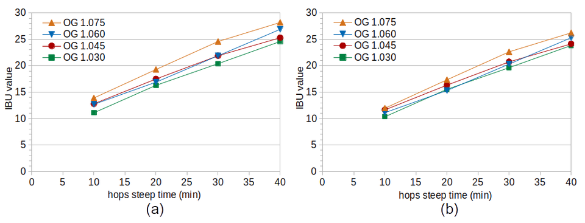
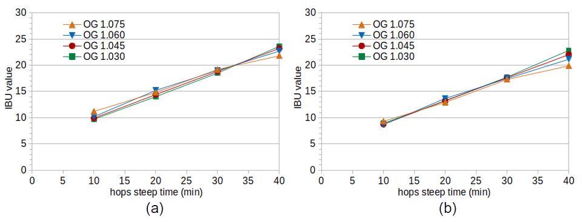
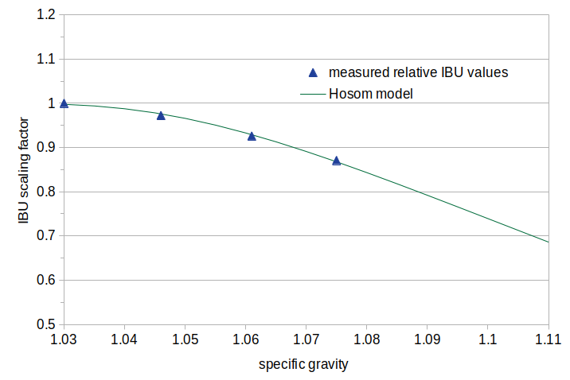
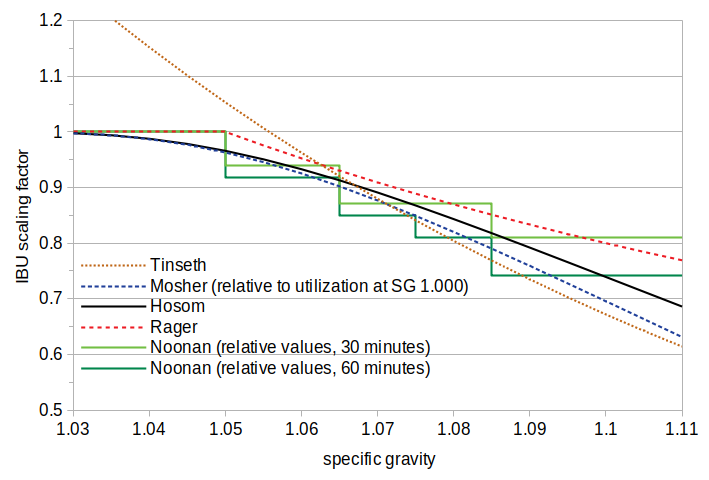

Abstract
The specific gravity of wort is thought to have a significant impact on IBUs, with an increase in gravity associated with a reduction in IBUs. The purpose of the two experiments in this blog post was to evaluate existing formulas of specific-gravity effects on experimental data. The results of the first experiment showed no clear trend in IBUs as a function of specific gravity, and the second experiment showed a pattern only after a 40-minute hop steep time. From this set of data, it seems that specific gravity has no effect on IBUs at shorter steep times; it may be that previous work looked only at longer steep times. The data from these experiments were used to construct a scaling factor for IBUs based on specific gravity: FG = 1 − 2×exp(−1 / (slope × (SG − 1))), where FG is the relative change in IBUs, SG is the specific gravity, slope = 1 for steep times less than 30 minutes, slope = 4.9 for steep times greater than or equal to 40 minutes, and slope = 0.39 × (t − 30) + 1 for time t between 30 and 40 minutes. This scaling factor at 40 minutes and above is close to the average of other formulas for this effect.
1. Introduction
1.1 Terminology
A number of terms are used to refer to the specific gravity (SG) of wort as it relates to IBUs. One term is "boil gravity," the specific gravity during the boil (as opposed to the specific gravity before the boil) [Hall, p. 62]. Another is "original gravity," the specific gravity at the end of the boil (as opposed to the specific gravity at the beginning of, or during the middle of, the boil). Glenn Tinseth uses the term "average gravity" to denote the average specific gravity of the wort during the boil [Tinseth, web page]. While the gravity does change during the boil, the use of different terms by different authors serves more to confuse the issue than to distinguish subtle nuances between the methods. Therefore, all of these terms will be grouped together in this blog post under the common term "specific gravity," or SG.
Utilization, or the kettle utilization rate, is the concentration of isomerized alpha acids (IAAs) that end up in the finished beer, divided by the concentration of alpha acids added to the kettle [e.g. Fix and Fix, p. 47]. For the same amount of alpha acids that are added, a change in utilization often corresponds to a similar change in IBUs, even though IBUs are not the same as isomerized alpha acids. For the sake of simplicity, the two terms are used interchangeably in this blog post.
1.2 References in the Literature
References in the literature for a relationship between gravity and IBUs go back at least as far as 1965. John Hudson noted at that time that "for the same hop rate, increase in the original gravity ... results in less hop substance in beer" [Hudson, p. 482]. James S. Hough et al. say that "in wort boiling higher utilization is obtained from weak worts than from strong worts" [Hough, p. 489]. Michael Lewis and Tom Young say that "losses [of isomerized alpha acids] depend on many factors including ... wort composition especially its gravity" [Lewis and Young, p. 266]. George and Laurie Fix note that the amount of utilization depends on wort gravity, and that higher gravity wort is associated with lower utilization [Fix and Fix, pp. 47-48]. These descriptions note the same trend (decreasing utilization with increasing gravity), but none of them are specific enough to enable even a rough mathematical or quantitative description.
Ian McMurrough et al. provide specific data about the effect of gravity on utilization [McMurrough, p. 106]. They found that wort gravities of 1.024, 1.040, 1.061, and 1.083 had utilizations of 57%, 47%, 45%, and 43%, respectively, with an average pH of 5.5. While these results conform to the trend reported elsewhere in the literature, the relative difference in utilization between an SG 1.040 wort and an SG 1.083 wort is less than 10%; it is only the very low-gravity wort (SG 1.024) that shows relatively high utilization. (The original data were presented in degrees Plato; I have converted those values to specific gravity for consistency with the rest of this post. The data fit well to an equation with exponential decay, U = 0.888 × exp(-78.4 × (SG−1)) + 0.434, where U is the utilization and SG is the specific gravity.) While the authors noted an average pH of 5.5, they did not indicate the range of pH values or if they adjusted the pH of the wort. They also did not state the steep time of the hops.
Mark Malowicki looked at the rate of production of isomerized alpha acids in a buffer system (pH 5.2) with specific gravities 1.0 and 1.040 [Malowicki, pp. 38-41]. He found no difference in the production of IAAs at these two gravity levels, and speculated that the "experience-based knowledge that hop utilization decreases with increasing wort strength" could be due to losses of IAAs to trub rather than a decrease in the rate of production of IAAs. He considered that these losses might be explained by high-gravity worts having a greater concentration of proteins that remove bitter acids from the wort [Malowicki, p. 41].
Sebastian Kappler et al. boiled 100 ppm of isomerized alpha acids for 60 minutes in worts of different strengths and looked at how much of the IAAs could be recovered from the wort after the boil [Kappler]. They found, consistent with Malowicki's theory that proteins in the wort bind with IAAs and precipitate out of solution, that higher specific gravities resulted in less recovery of IAAs. At SG 1.040 about 90% of the IAAs could be recovered, while at SG 1.074 only about 50% could be recovered. The recovery rate decreased linearly with increasing gravity.
1.3 Quantitative Models
Michael Hall has summarized previous work on modeling the impact of specific gravity on IBUs [Hall]. Hall reviewed several methods, including those by Jackie Rager [Rager, pp. 53-54 (as referenced by Hall)], Randy Mosher [Mosher, pp. 108-109], Glenn Tinseth [Tinseth, web page], and Greg Noonan [Noonan, p. 215]. (Other authors of IBU formulas, such as Mark Garetz and Ray Daniels, use the Rager gravity correction factor.) In the Rager and Noonan methods, SG has no impact on IBUs at gravities less than 1.050. Mosher and Tinseth show increasing IBUs at gravities lower than 1.050. At higher gravities, all four authors show a similar trend of decreasing IBUs with increasing gravity. For example, at SG 1.075, the scaling factor of the different formulas ranges from 0.8 to 0.9 times the factor at SG 1.050.
The tabular data provided by Noonan suggest that at shorter steep times (15 minutes or less) there is less impact (and sometimes no impact) of gravity on IBUs [Noonan, p. 215], but the data are quite noisy at these shorter steep times.
1.4 Experimental Control
While these formulas (and Noonan's table) are more useful than qualitative descriptions, it is not clear what parameters were controlled for when the models were developed. For example, the pH of wort naturally changes with the specific gravity. A wort made from low-alkalinity water to specific gravity 1.080 may have a pH of 5.70. If this wort is diluted with the same low-alkalinity water to SG 1.030 (or if fresh wort is prepared with the same water to SG 1.030), the pH may increase to 5.95. This 0.25 increase in pH can cause an 8% increase in IBUs, depending on the alpha-acid rating of the hops and the boil time. Tinseth did not control the wort pH when he made his measurements [Tinseth, email], and so his measured changes in IBUs at different gravities may have been affected, at least to some degree, by changes in pH. (As Prof. Tinseth has noted, there is not much variation in the production [Malowicki, p. 41] or losses [Kappler, p. 334] of isomerized alpha acids in the pH range of interest [Tinseth, email]. The pH-dependent changes I've observed in IBUs seem to be caused more by auxiliary bittering compounds.) It is unknown if the other models, or McMurrough's or Kappler's experiments, controlled for wort pH.
1.5 Summary of Previous Work
The literature describes an increase in specific gravity as resulting in lower utilization. The reports that quantify this effect are, however, quite varied in their results. In the set of data provided by McMurrough et al., the effect was most pronounced at lower gravities (e.g. SG 1.024) and there was a fairly small effect (less than 10%) between SG 1.040 and SG 1.083. Malowicki did not observe any change in the rate of production of IAAs at different gravities. Kapper et al. found a fairly steep decrease in the recovery of IAAs as specific gravity increased, with a relative 44% decrease from SG 1.040 to SG 1.074. Of the four available quantitative models, two describe a lower limit of 1.050 for the effect of gravity on IBUs, which contradicts the data provided by McMurrough. At higher specific gravities, all of these models predict much less of an effect than Kappler's results and more of an effect than McMurrough's results. Three of the four models are not dependent on the hop steep time, and one of them is. The lack of published procedures and experimental details makes it difficult to determine under what conditions, and to what degree, there is a relationship between gravity and IBUs.
2. Experimental Overview
The purpose of the two experiments described here was to evaluate the available models on experimental data. The conditions within each experiment were designed to be as similar as possible with the exception of the variable being tested (specific gravity). Each experiment consisted of four batches of beer at different specific gravity levels. The conditions of the second experiment were identical to the first, but the treatment of krausen was different.
3. Experimental Methods
For each batch of beer, wort was prepared to a target specific gravity using the amounts of Briess Pilsen Light Dried Malt Extract and 120°F low-alkalinity (49°C) water listed in Tables 1 and 2, yielding about 3.47 G (13.13 liters) of room-temperature wort in each condition. (Within each experiment, the DME was from the same lot number.) This wort sat for at least 90 minutes to let the pH stabilize before the pH was adjusted with phosphoric acid to a room-temperature pH of about 5.60. The measured (and temperature-corrected) pH levels and specific gravities are listed in Tables 1 and 2.
Hops were added to target about 170 ppm of alpha acids at the time of the hop addition. This meant 1.181 oz (33.485 g) of Cascade with an alpha-acid rating at harvest of 7.05% (measured by AAR Lab) and an estimated degradation factor of 0.908 from being stored in the freezer in vacuum-sealed packaging for 11 months (using the Garetz formula [Garetz, pp. 111-114]).
The wort was boiled for 5 minutes before adding the hops, to avoid the foam associated with the start of the boil. Immediately before the hop addition, a 12-oz (0.35 l) sample was taken for later measurement of specific gravity. The loose hop cones were then added to the wort, defining time t = 0. Every 10 minutes, 15-oz (0.44 l) samples were taken from the boiling wort, quickly filtered through a sieve, and cooled in an aluminum cup and ice bath. Once they reached 75°F (24°C), the cooled samples were transferred to sanitized quart (liter) containers. Each container was aerated for 1 minute by vigorous shaking, and the amount of Safale US-05 yeast (age 9 or 10 months) listed in Tables 1 and 2 was pitched in order to target 750,000 cells per ml and degree Plato.
The kettle was covered during the boil to minimize evaporation and the resulting changes in specific gravity. The total hop steeping time was 40 minutes. Soon after obtaining the last 15-oz (0.44 l) sample, another 12-oz (0.35 l) sample was taken for subsequent measurement of specific gravity.
Each of the 15-oz (0.44 l) samples fermented for 8 days (with a small opening to vent CO2) and was then analyzed for IBUs by Oregon BrewLab.
In Experiment #1, the krausen that formed was mixed back into the fermenting wort every day using a sanitized thin spatula. In Experiment #2, the fermentation vessels were left undisturbed and krausen was allowed to build up on the sides of the container.
| Condition A | Condition B | Condition C | Condition D | |
| DME | 90.87 oz / 2.576 kg |
72.67 oz / 2.060 kg |
54.47 oz / 1.544 kg |
36.27 oz / 1.028 kg |
| added water | 3.11 G / 11.76 l |
3.19 G / 12.08 l |
3.28 G / 12.41 l |
3.36 G / 12.73 l |
| measured pre-boil pH | 5.60 | 5.60 | 5.61 | 5.60 |
| measured pre-boil SG | 1.0718 | 1.0589 | 1.0438 | 1.0288 |
| measured SG at t = 0 | 1.0775 | 1.0630 | 1.0460 | 1.0300 |
| measured SG at t = 40 | 1.0785 | 1.0635 | 1.0465 | 1.0303 |
| target yeast pitched | 0.016 oz / 0.455 g |
0.013 oz / 0.369 g |
0.010 oz / 0.280 g |
0.007 oz / 0.189 g |
| Condition A | Condition B | Condition C | Condition D | |
| DME | 90.87 oz / 2.576 kg |
72.67 oz / 2.060 kg |
54.47 oz / 1.544 kg |
36.27 oz / 1.028 kg |
| added water | 3.11 G / 11.76 l |
3.19 G / 12.08 l |
3.28 G / 12.41 l |
3.36 G / 12.73 l |
| measured pre-boil pH | 5.59 | 5.62 | 5.61 | 5.60 |
| measured pre-boil SG | 1.0725 | 1.0580 | 1.0425 | 1.0265 |
| measured SG at t = 0 | 1.0750 | 1.0607 | 1.0460 | 1.0303 |
| measured SG at t = 40 | 1.0768 | 1.0624 | 1.0473 | 1.0310 |
| target yeast pitched | 0.016 oz / 0.455 g |
0.013 oz / 0.369 g |
0.010 oz / 0.280 g |
0.007 oz / 0.189 g |
4. Experimental Results
4.1 Experiment #1
The left-hand side of Figure 1 shows the measured IBU values from Experiment #1. This set of data shows the opposite trend from what is expected based on the literature: an increase in IBUs with higher specific gravity. The effect is small but consistent across sample times, and is therefore unlikely to be due to random variation.
IBUs can be measured in unhopped beer [Shellhammer, p. 177]. These IBUs come from malt polyphenols that are one of the auxiliary bittering compounds (also called nonIAA). Worts with higher gravity will therefore have their IBU values increased slightly by the greater concentration of malt polyphenols. I previously developed a simple formula to predict IBUs from the concentration of malt polyphenols, based on original gravity:
IBUwort = (OG − 1.0) × 25.0
where IBUwort is the expected IBU level from wort polyphenols and OG is the original gravity of the beer. (A gravity of 1.050 is predicted to yield 1.25 IBUs, which is generally consistent with levels reported by Tom Shellhammer [Shellhammer, p. 177].)The right-hand side of Figure 1 shows adjusted IBU values that have had the estimated contribution of wort polyphenols removed. The IBU values between conditions on the right-hand side of Figure 1 are closer to each other, with only Condition A (highest wort gravity) showing noticeably larger IBU values. Whether this is due to an effect of specific gravity, an underestimation of the impact of malt polyphenols, or some other factor (such as Condition A having, by chance, a slightly higher concentration of alpha acids) can not be determined from this set of data.
 Figure 1. IBU values from Experiment #1 at different steep times (horizontal axis) and original gravity levels. Figure 1(a) shows the measured IBU values and Figure 1(b) shows the values after removing the estimated effect of malt polyphenols on IBUs.
4.2 Experiment #2
Thinking that mixing the krausen back into the fermenting wort might have had a significant impact on the results from Experiment #1, I conducted Experiment #2 with the same conditions but letting krausen deposits build up on the sides of the fermentation vessels. The hypothesis in this case was that utilization and IBUs really do decrease with increasing gravity, but that higher-gravity worts have (for some unknown reason) relatively more IBUs in the krausen, and so by mixing the krausen back into the wort the effect of gravity on IBUs was not seen in Experiment #1.
The measured IBU values from Experiment #2 (shown in Figure 2 on the left-hand side) show no clear difference in IBUs with a change in specific gravity, with the possible exception of an 8% relative difference between SG 1.030 (Condition D) and SG 1.075 (Condition A) at 40 minutes. After removing the expected IBUs coming from malt polyphenols (as shown in Figure 2 on the right-hand side), the difference between the conditions at 10, 20, and 30 minutes becomes even less. The difference at 40 minutes becomes more pronounced, with a 13% relative difference between Conditions A and D.
 Figure 2. IBU values from Experiment #2 at different steep times (horizontal axis) and original gravity levels. Figure 2(a) shows the measured IBU values and Figure 2(b) shows the values after removing the estimated effect of malt polyphenols on IBUs.
5. Analysis
The data from the 40-minute steep time in Experiment #2 can be fit to an equation: FG = 1 − 2×exp(−1 / (slope × (SG − 1))) where FG is the relative level of IBUs (relative to the IBUs at SG 1.030), SG is the specific gravity, and slope = 4.9. These data points and a graphical representation of the equation are shown in Figure 3. While there is no explicit limit at SG 1.050 (as in some other methods), the impact of gravity is very close to 1.0 up to SG 1.030 and is fairly close to 1 (0.966) at SG 1.050. The general shape of the equation is similar to that of the Mosher data (see Figure 4).
 Figure 3. Data points from Experiment #2 at a 40-minute steep time, modeling a decrease in IBUs with increasing gravity. The data are the IBU value at the gravity indicated on the horizontal axis divided by the IBU value at gravity 1.030. The model is a best fit to these data points.
If one accepts that there is little to no impact of gravity on IBUs at steep times less than 40 minutes, it is possible to modify this formula to reflect this time-dependent nature. A slope value of 1.0 effectively removes any impact of gravity, and a linear interpolation between 30 and 40 minutes can smooth the transition from "no effect" to "full effect". This interpolation can be modeled with slope = 0.39 × (t − 30) + 1 for time t between 30 and 40 minutes.
Figure 4 shows the relative impact of gravity using the four available quantitative methods (with two steep times, 30 minutes and 60 minutes, for the Noonan method). This figure also shows the formula derived from the data in Experiment #2 at the 40-minute steep time, labeled 'Hosom'. It can be seen that all of these formulas have results similar to each other, with the exception of the Tinseth formula at lower gravities. (I labeled the new formula 'Hosom' to be consistent with the existing naming convention.)
 Figure 4. A visual comparison of existing methods (and the formula developed here, labeled 'Hosom') for accounting for the effect of specific gravity on IBUs. The Noonan data were derived from his Table 18. The Noonan and Mosher data are plotted relative to the predicted IBUs or utilization at the lowest gravity.
6. Conclusions
6.1 Effect of Steep Time
The data from the two experiments show no effect of specific gravity at steep times of 30 minutes or less. It seems possible that the experiments that were conducted for developing the previous formulas (with the exception of Noonan) did not evaluate short steep times, but used a traditional boil time closer to 60 minutes. The lack of an effect at less than 40 minutes implies that it can take a long time for the proteins in the wort to bind with the isomerized alpha acids (IAAs) (and/or auxiliary bittering compounds (ABC)) and precipitate out of solution.
It is also possible that, instead of steep time, the effect of gravity only applies at higher concentrations of IAAs and/or ABCs, and therefore only at higher IBU values. In this case, according to Figure 2, the effect of gravity might only be observed in beers with more than 18 IBUs. Or, there might be an interaction between time and concentration, and the combination of these two may be needed to predict when gravity will have an effect on IBUs.
6.2 Controlling for pH
Both the data from McMurrough and the formula from Tinseth show relative utilization decreasing with gravity using an exponential decay factor. This exponential decay factor means that very low SG values have much greater relative utilization than higher SG values. Although McMurrough et al. reported the average pH over all conditions, they did not report the pH levels at each gravity. Tinseth did not control for pH when developing his formula because IAA levels in beer are not greatly influenced by pH. Unless the wort pH is adjusted (e.g. by the addition of acid), the pH of wort will increase exponentially as the specific gravity decreases, and increased pH is associated with larger IBU values. I therefore suspect that the relatively high utilization at low gravity values noted by McMurrough and Tinseth is due to a confounding of the effects of pH and gravity on IBUs. While there may be an effect of gravity at lower SG values (e.g. less than 1.050), the effect appears to be minor.
6.3 Effects of Krausen
The IBU values from Experiment #1 are more spread out at each time point than the results of Experiment #2. In Experiment #1, the condition with the highest SG has the highest IBU levels, and the condition with the lowest SG has the lowest IBU levels, even after accounting for the IBUs contributed by malt polyphenols. Experiment #2 shows, except for the 40-minute steep time, very little difference between conditions after accounting for malt polyphenols. The only (intentional) difference between Experiments #1 and #2 was in the treatment of krausen. In Experiment #1, krausen was mixed back into the fermenting beer once a day; in Experiment #2, krausen deposits were allowed to form on the sides of the fermentation vessel. The overall differences between Experiments #1 and #2 show an expected increase in IBUs from mixing krausen back into the fermenting beer, but the SG-dependent pattern in Experiment #1, while slight, is unexpected.
If this effect is real, it seems that (a) there is less loss of IBUs with higher-gravity worts during fermentation, or (b) there is greater production of (auxiliary) bittering compounds in the krausen during fermentation with high-gravity worts. It is difficult to envision why a lower-gravity wort would lose more IBUs than a higher-gravity wort during fermentation. It is possible that alpha (or beta) acids still present in the krausen are oxidized and transformed into bitter substances (or that IAAs may transform back into oxidized alpha acids [Verzele and De Keukeleire, p.116]), and that the greater amount of foamy krausen in higher-gravity beers facilitates this transformation, but this is pure conjecture. It is also quite possible that these subtle differences are due to unintended variation between the experimental conditions (such as slightly more alpha acids ending up in Condition A than in Condition D). Additional experiments would be required to replicate the observed pattern and identify the reason for this apparent trend.
6.4 Future Work
While this blog post was originally intended to be a fairly straightforward evaluation of existing formulas on experimental data, the results bring up more questions than answers. The experiments described here are therefore just a first step to a better understanding of how specific gravity affects IBUs. In the future, it would be interesting to evaluate data with: (a) boil times ranging from 10 to at least 60 minutes, (b) a greater range of specific gravity levels, (c) different initial concentrations of alpha acids, (d) different wort pH levels, and (e) different treatment of krausen.
7. Acknowledgements
I greatly appreciate the helpfulness and quick responses of both Glenn Tinseth and Randy Mosher in response to my out-of-the-blue questions. That both of these luminaries were happy to answer my questions is a testament to the spirit of cooperation and support that makes homebrewing a wonderful hobby.
I am also always greatly appreciative of the high-quality IBU analysis provided by Dana Garves at Oregon BrewLab. Without such consistent accuracy, it would not be possible to draw meaningful conclusions from the data.
References
Navigate to:
AlchemyOverlord home page